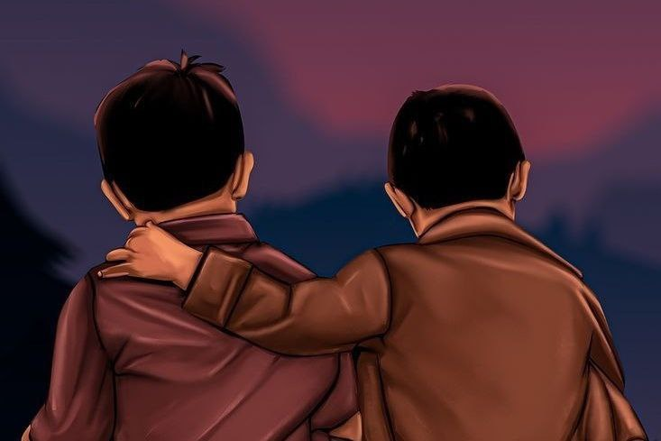

الحياة التي التقطت الكوفيد

مر عيد آخر من التضحية.
تم تجنب القيود الصارمة لكورونا فيما يتعلق بالمهرجان. هرع الناس إلى السوق مثل الرجال الذين أطلق سراحهم من السجون. كان فرح استعادة الحرية المفقودة واضحا في جميع الوجوه.
"راشد.. لا تخرج إلا لضروريا. هذه الوباء العظيمة لم تتركنا على الإطلاق. كلما اجتمعنا أكثر ، كلما عاد أكثر قوة". قال جده.
في أحد الأيام، أوقفه جده عندما كان راشد يبكي ويصر على الخروج. قال: بدأت الغيوم تأتي. في الحقول ، يبدأ المطر بالرقص في الأوراق. هذه المرة يبدو أن أمطار أقل في كاركيداكام . أمطرت كثيرا قبل ذلك.
نظر إلى السماء المغطاة بالمطر عندما خرج بمظلة للذهاب إلى السوق وقال : أيأتي مطر غزير....
جلس راشد على الشرفة. الممتع الجلوس هنا ومشاهدتها تمطر. في البعيد ، يمكن رؤية منزل صديقي أفسل. تذكر راشد أنه داخل سحابة من الحزن. لم أسمع ضحكات من منزله بعدها. لا أرى أحدا في الخارج. في بعض الأحيان يجيئ أفسل ويجلس هنا. ثم سيغادر بهدوء.
توفيت والدة أفسل الأسبوع الماضي إثر وباء كورونا. انها ذهبت إلى منزل أحد الأقارب لحضور حفل زفاف. قال الكثير من الناس لهم لان لا ذهبو. لم يطيعوا وغادروا. لم يذهب أفسل. لمجرد وجود قانون ينص على عدم إطلاق سراح الأطفال. وبذلك أنه سلم من كرونا
وبعد أسبوع أصيبت والدته بالحمى. لكنها لم تري الطبيب. اشتريت دواء من متجر الأدوية. لذلك عاشوا لمدة شهر مع الحمى . قالت والدته لأولئك الذين نصحوها.
"إذا اكتشفوا أنني مصاب بكورونا ، فسوف يمسكون بي ويأخذونني بعيدا".
ولكن قد اصاب ما كان تخشى ! في إحدى الليالي لم تستطع والدة أفسل التنفس. فتحت عينيها على مصراعيها وصفقت بيديها وقدميها لالتقاط الأنفاس. أمسك بهم أحدهم ووضعهم في سيارة إسعاف ونقلهم إلى المستشفى. ولكن الساعة ضيقة. اخترقت جذور الالتهاب الرئوي أكبادهم. لم يكن لدى الطبيب أي شيء آخر يفعله. ذهب الطبيب بحقن آلة أوكسي في ثقوب الأنفها
ثلاثة أيام فقط...
إنتقلت إلى رحمة الله ، وفقدوا كفاحهم الدؤوب من أجل هواء الحياة.
أصبح أفسل يتيما. فقد والدته.
لماذا لا يفكر أولئك الذين يجرؤون على كسر القواعد في حياة الآخرين؟. تذكر راشد عجيبا.
"ما هو تفكير راشد؟" كان جده.
"هل عدت من السوق بحلول ذلك الوقت؟" سأل رشيد.
نهض راشد وأخذ الظرف من يد جده. أخذ جده علبة حلوى من جيبه وأعطاها لراشد. وهو يشتريه، تحولت عينا راشد دون علمه إلى منزل أفسل.
هناك، كان افسل جالسا متكئا على العمود في الخارج، وناظرا بحزن إلى قطرات المطر المتساقطة في الفناء.
سار راشد إلى المطر الغزير مع علبة من الحلويات.